Distributed Message Queue
Kafka jaisa distributed message queue design karna — topics, partitions, WAL-based storage, consumer groups, ISR replication aur delivery semantics (at-most / at-least / exactly-once). Payments engineer ke liye yeh chapter "bread and butter" hai.
Introduction: queue kyun chahiye?
Message queue ka basic kaam simple hai — producer message daalta hai, consumer nikaalta hai. Lekin iske fayde bahut bade hain:
- Decoupling — producer ko consumer ka pata hi nahi hona chahiye. Payment service ko nahi pata ki "notification service" ya "fraud service" kitne hain; woh bas event publish karta hai.
- Independent scaling — Black Friday pe producers 10x ho gaye? Consumers ko alag se scale karo, queue beech mein buffer ka kaam karega.
- Availability — downstream service down hai to bhi upstream chalta rahega; messages queue mein wait karenge.
- Performance — producer "fire and continue" kar sakta hai, consumer ke confirmation ka wait nahi.
Popular options: Kafka, RabbitMQ, RocketMQ, Apache Pulsar, ActiveMQ, ZeroMQ. Strictly bolein to Kafka aur Pulsar event streaming platforms hain (data retain karte hain, replay possible), RabbitMQ classic queue hai (ack hote hi message gaya). Lekin features converge ho rahe hain — RabbitMQ Streams aa gaye, Kafka mein queue-like share groups (KIP-932) aa rahe hain. Is chapter mein hum Kafka-style design banayenge: long retention, repeated consumption, ordering.
Step 1: Requirements aur scope
Interview mein pehle yeh sawaal poochho (notes ke dialogue ka gist):
| Sawaal | Jawab (interviewer) | Design pe asar |
|---|---|---|
| Message format/size? | Text, few KBs | Batching zaroori, small-message overhead amortize karna padega |
| Repeated consumption? | Haan, alag consumers dobara padh sakein | Delete-on-ack nahi chalega → log + offsets |
| Ordering? | Haan, preserve karo | Per-partition ordering + partition key |
| Retention? | 2 weeks | Disk-heavy storage, segment-based truncation |
| Delivery semantics? | At-least-once must, ideally configurable | acks + offset-commit order configurable |
| Throughput/latency? | Log aggregation ke liye high throughput, traditional use ke liye low latency | Batch size tunable |
Functional requirements
- Producers messages bhejte hain, consumers consume karte hain
- Messages ek baar ya baar-baar consume ho sakein
- Purana data truncate ho sake (retention)
- Message size KB range mein
- Order preserve ho
- Delivery semantics configurable: at-most-once / at-least-once / exactly-once
Non-functional requirements
- High throughput ya low latency — use case ke hisaab se configurable
- Scalable — distributed, sudden surge handle kare
- Persistent & durable — disk pe likha ho aur multiple nodes pe replicated
Step 2: High-level design
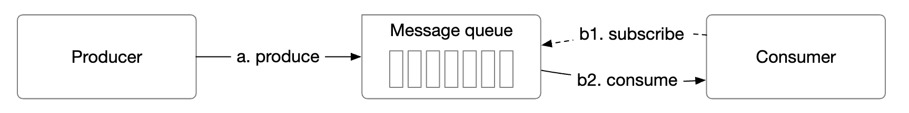
Messaging models
Point-to-point: ek message sirf ek consumer ko milta hai. Ack hua to queue se delete. Classic work-queue (job distribution).
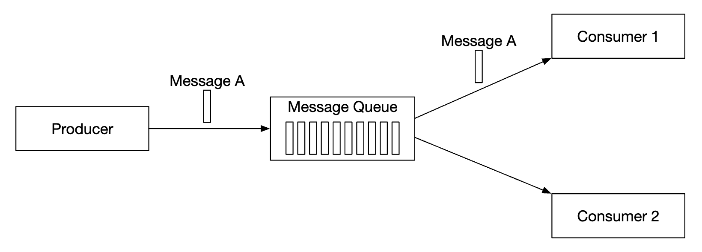
Publish-subscribe: message ek topic pe jaata hai aur us topic ke har subscriber ko milta hai.
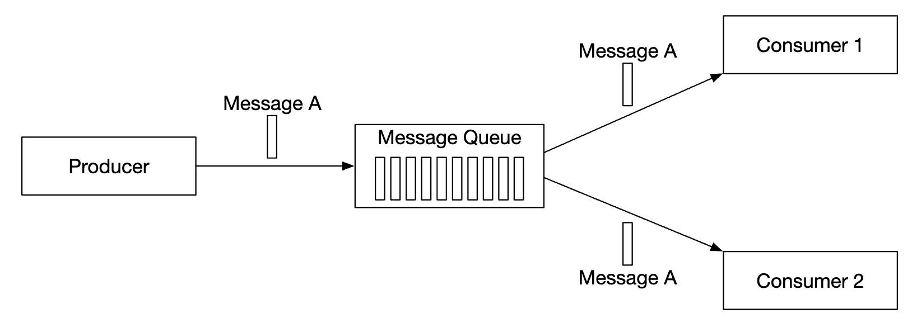
payment-events topic ko ledger-service group, notification group, fraud group — teeno independently padhte hain, apne offsets ke saath.Topics, partitions, brokers
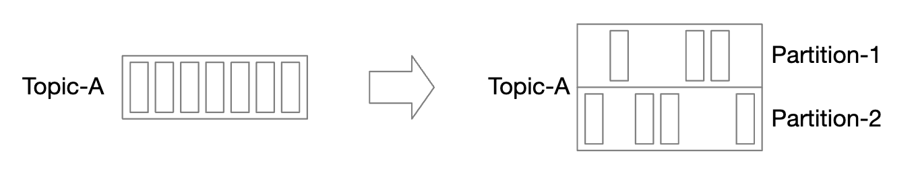
- Partitions ko host karne wale servers = brokers.
- Partition ke andar message ki position = offset (monotonically increasing long).
- Partition key decide karti hai message kis partition mein jaayega — default
hash(key) % numPartitions. Sameuser_id= same partition = us user ke events ka order guaranteed.
hash(key) % N badal jaata hai — same account ke naye events naye partition mein jaa sakte hain jabki purane events abhi purane partition mein unconsumed pade hain. Result: per-key ordering temporarily toot sakti hai. Isliye payments topics ke partitions shuru mein hi generously plan karo (e.g. expected peak consumers × 2-3).Consumer groups
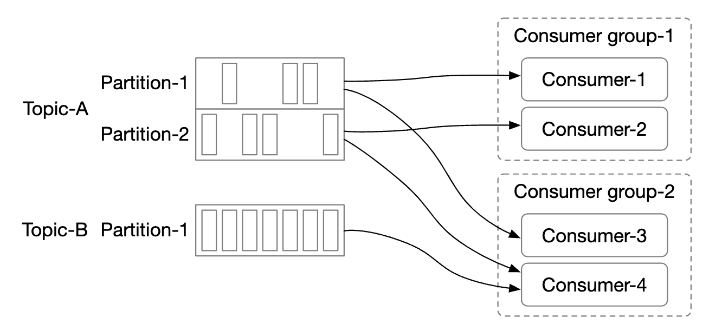
- Har consumer group apna offset maintain karta hai.
- Parallel reading throughput badhata hai, lekin agar ek partition do consumers padhein to ordering toot jaati hai → rule: ek partition, group mein max ek consumer.
- Consequence: group mein consumers > partitions ho gaye to extra consumers idle baithenge.
High-level architecture
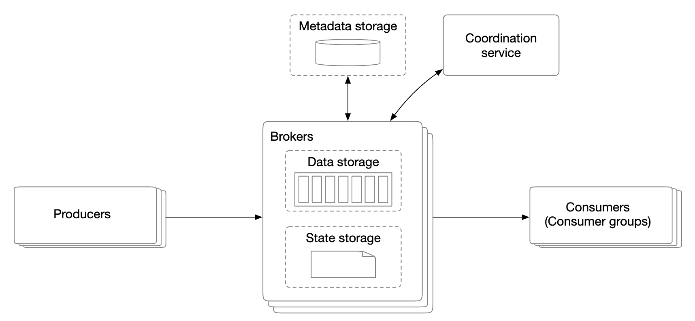
- Data storage: partitions ke messages
- State storage: consumer offsets / assignments
- Metadata storage: topic config, retention, replica distribution
- Coordination service: service discovery + leader election (ZooKeeper / KRaft)
Step 3a: Data storage — WAL aur segments
Teen bade design choices jo throughput laate hain:
- On-disk structure jo sequential I/O aur OS page cache ka fayda uthaye.
- Immutable messages — producer → broker → consumer same binary format, extra copy/transform nahi.
- Batching everywhere — small I/O throughput ka dushman hai.
Access pattern dekho: write-heavy aur read-heavy, koi update/delete nahi, almost poora sequential. Database (B-tree, random I/O, row locks) is pattern ke liye overkill aur slow hai. Answer: Write-Ahead Log (WAL) — append-only file.
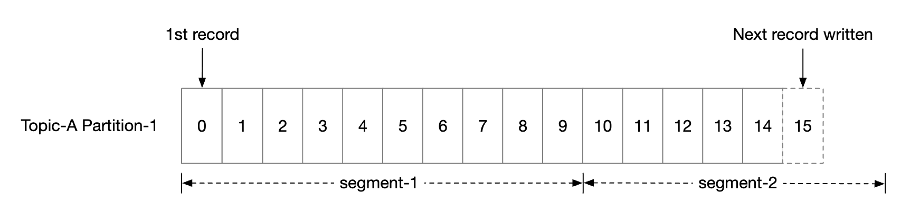
payments-3/), jismein segment files: 00000000000000000000.log (data), .index (offset → file position, sparse), .timeindex (timestamp → offset). Filename = segment ka base offset. Offset lookup = segment pe binary search + sparse index scan. Reads mein Kafka sendfile() (zero-copy) use karta hai — page cache se seedha socket, JVM heap mein copy nahi. Isliye Kafka broker ko bada heap nahi, bada OS page cache chahiye."HDD slow hai" myth hai — random I/O slow hai. Sequential reads/writes pe HDD bhi achha throughput deta hai, aur OS aggressively page cache karta hai, to recent data (jo consumers padhte hain) mostly memory se serve hota hai.
Message data structure
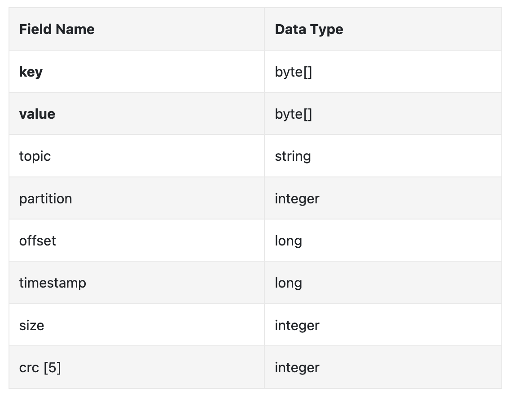
key aur value (dono byte[] — bold, kyunki yahi user data hai), phir metadata: topic (string), partition (integer), offset (long), timestamp (long), size (integer), crc (integer, integrity check). Location = (topic, partition, offset) ka tuple.- key: partition decide karta hai; unique hona zaroori nahi, null bhi ho sakta hai (null key → round-robin/sticky partitioning).
- value: payload — plaintext ya compressed binary.
- CRC: corruption detect karne ke liye (disk bit-rot, network).
key = accountId rakho to ek account ke debit/credit events strictly ordered. key = transactionId rakho to load evenly spread hoga lekin account-level ordering nahi milegi. Ordering aur hot-partition ka trade-off hai — ek merchant jo 30% traffic laata hai, uska partition hot ho jaayega.Batching
Batching producer, broker aur consumer — teeno jagah. Network round trip amortize hota hai aur disk pe bade sequential writes jaate hain. Trade-off classic hai: bada batch = high throughput + high latency; chhota batch = low latency + kam throughput. Throughput mode mein per-partition disk throughput limit ho to partitions badhao.
Step 3b: Producer flow
Producer ko kaise pata ki kis broker ko bhejna hai? Option 1: ek alag routing layer.
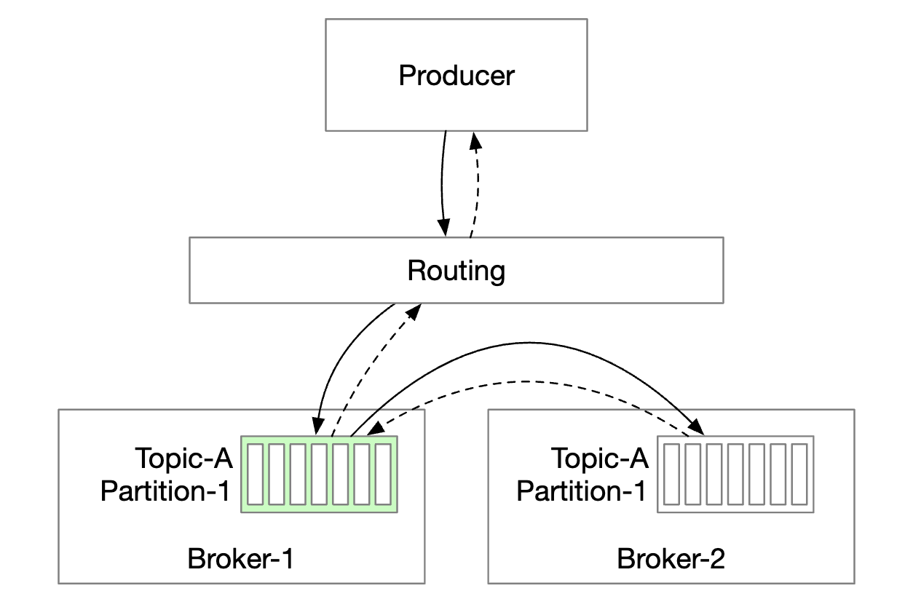
Problem: extra network hop, aur routing layer batching ko naturally support nahi karta. Fix: routing ko producer ke andar embed karo (client library).
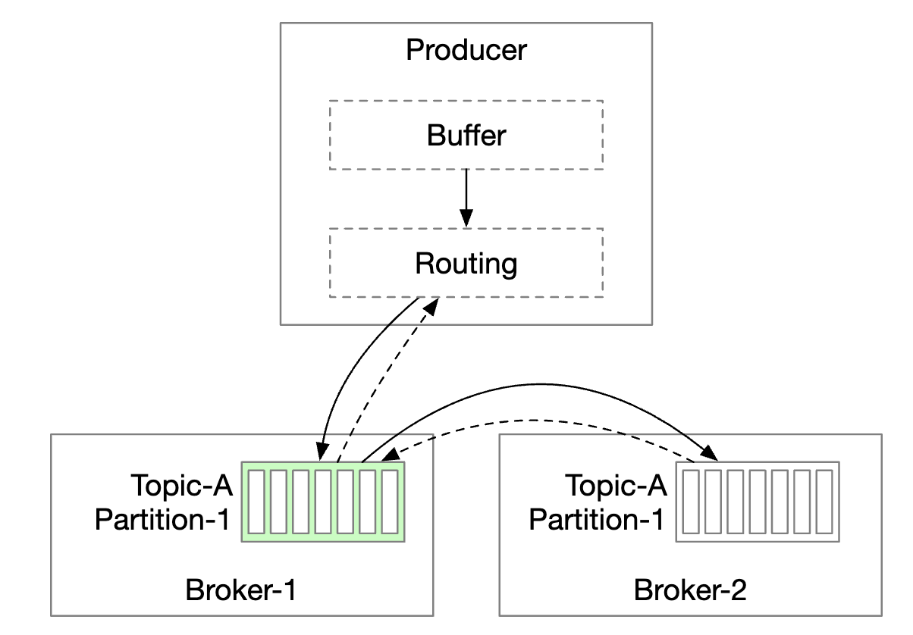
KafkaProducer ke andar RecordAccumulator (per-partition batches — buffer) aur ek background Sender thread hai. Metadata request se leader pata chalta hai aur client cache karta hai. batch.size aur linger.ms se batching tune hoti hai, compression.type (lz4/zstd) batch-level compression deta hai — bade batch = better compression ratio.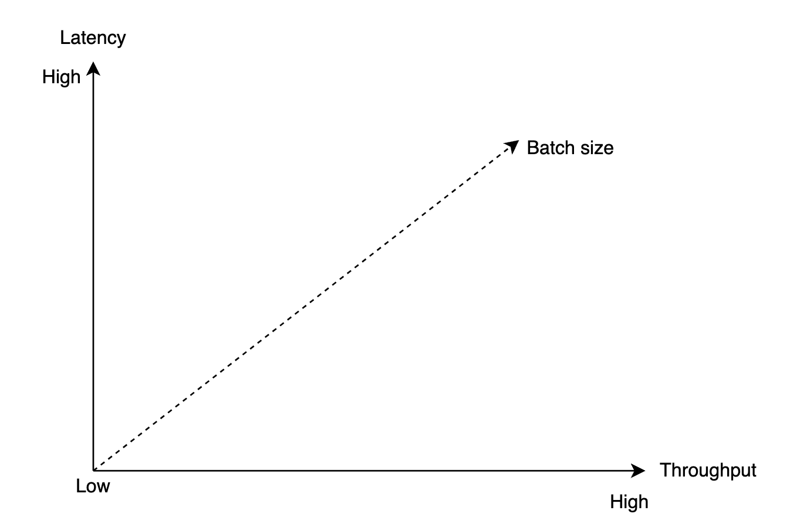
Step 3c: Consumer flow — push vs pull
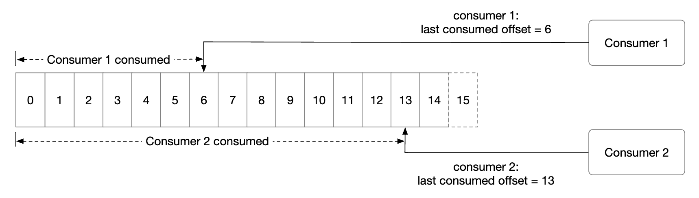
| Push | Pull | |
|---|---|---|
| Latency | Low — broker turant bhejta hai | Thodi zyada, long-polling se kam hoti hai |
| Backpressure | Mushkil — slow consumer overwhelm ho jaata hai | Natural — consumer apni speed se fetch karta hai |
| Batching | Broker ko consumer capacity nahi pata | Consumer bade batches aggressively fetch karta hai |
| Empty polls | N/A | Wasted calls → long polling (Kafka: fetch.max.wait.ms, fetch.min.bytes) |
Isliye Kafka aur hum pull model choose karte hain.
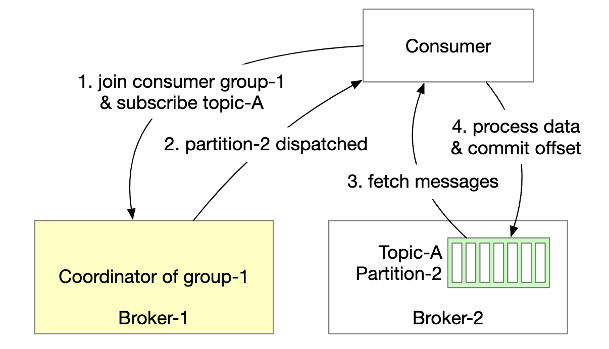
- Coordinator broker kaise milta hai?
hash(groupName)se — ek group ke saare consumers same coordinator se baat karte hain. - Yeh group coordinator ZooKeeper wale coordination service se alag cheez hai.
- Process → commit ka order hi delivery semantic decide karta hai (neeche detail).
__consumer_offsets (default 50 partitions, compacted) mein store hote hain. Group ka coordinator = us broker jo __consumer_offsets ki partition hash(group.id) % 50 ka leader hai — exactly book wala "hash the group name" idea.Step 3d: Consumer rebalancing
Rebalancing decide karta hai kaunsa consumer kaunsi partition padhega. Trigger: consumer join/leave/crash, ya partitions add/remove.
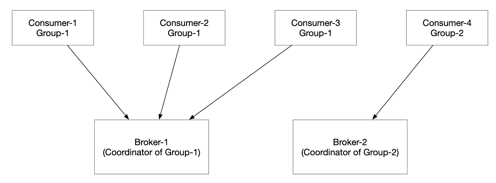
Flow: coordinator group ka ek leader consumer chunta hai → leader partition dispatch plan banata hai → coordinator sabko broadcast karta hai. (Assignment logic client side hai, isliye naye strategies bina broker upgrade ke aa sakti hain.)
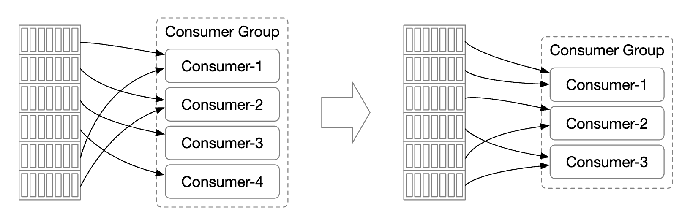
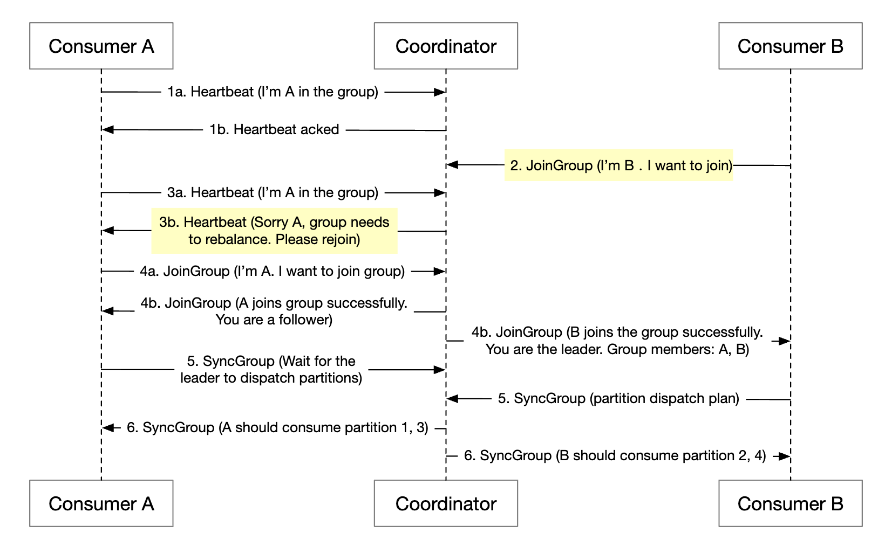
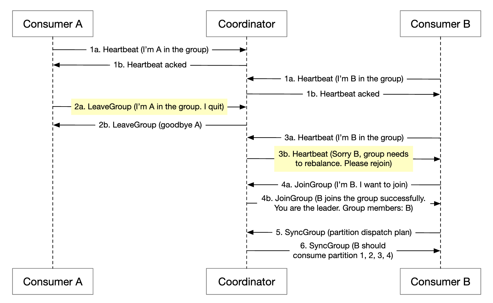
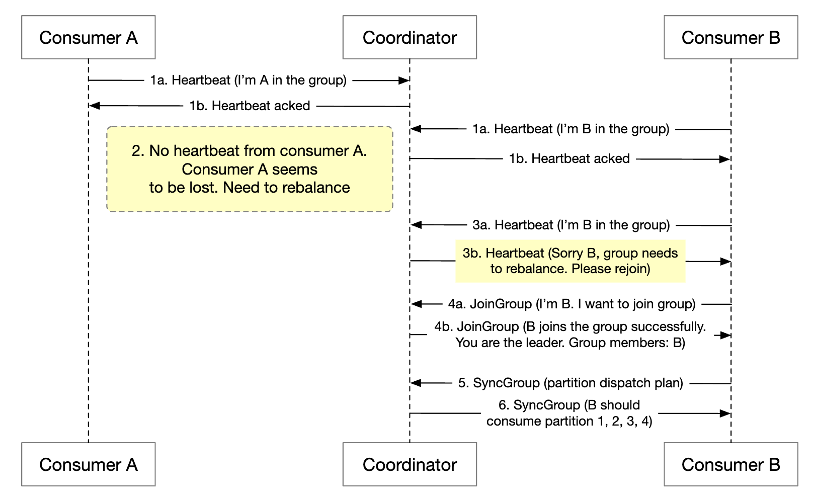
max.poll.interval.ms (default 5 min) se lamba chala (e.g. slow downstream bank API call), to consumer group se nikaala jaata hai → rebalance → doosra consumer same batch dobara uthata hai → duplicate processing. Fixes: max.poll.records kam karo, CooperativeStickyAssignor (incremental rebalance), static membership (group.instance.id) taaki rolling deploys pe rebalance na ho, aur Kafka 4.0 ka naya server-side group protocol (KIP-848).Step 3e: State storage, metadata aur ZooKeeper
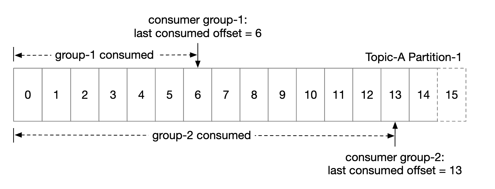
Consumer state ka access pattern: frequent read/write lekin low volume, frequently updated, rarely deleted, random access, consistency important. Metadata (partition count, retention, replica plan): rarely changes, small, high consistency. Dono ke liye ZooKeeper jaisa consistent KV store fit hai.
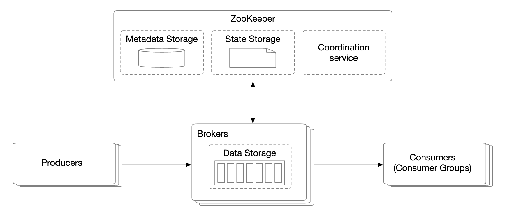
__cluster_metadata) mein hai jo controller quorum maintain karta hai. Kafka 4.0 (2025) se ZooKeeper mode completely removed hai. Interview mein bolo: "Book ZooKeeper bolti hai; aaj ke Kafka mein same responsibilities KRaft controllers karte hain — fewer moving parts, faster failover, millions of partitions scale."Step 3f: Replication aur ISR
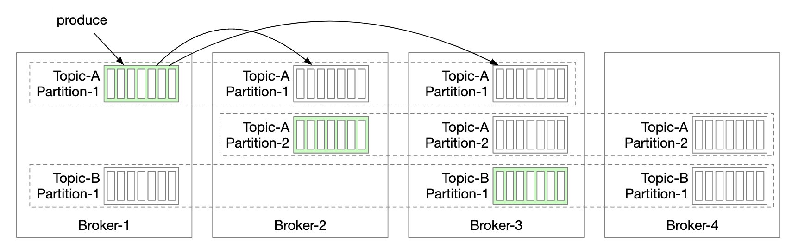
- Producer hamesha leader ko likhta hai; followers leader se pull karte hain.
- Enough replicas sync ho jaayein tab leader producer ko ack deta hai.
- Replica distribution plan metadata store mein save hota hai.
In-sync replicas (ISR)
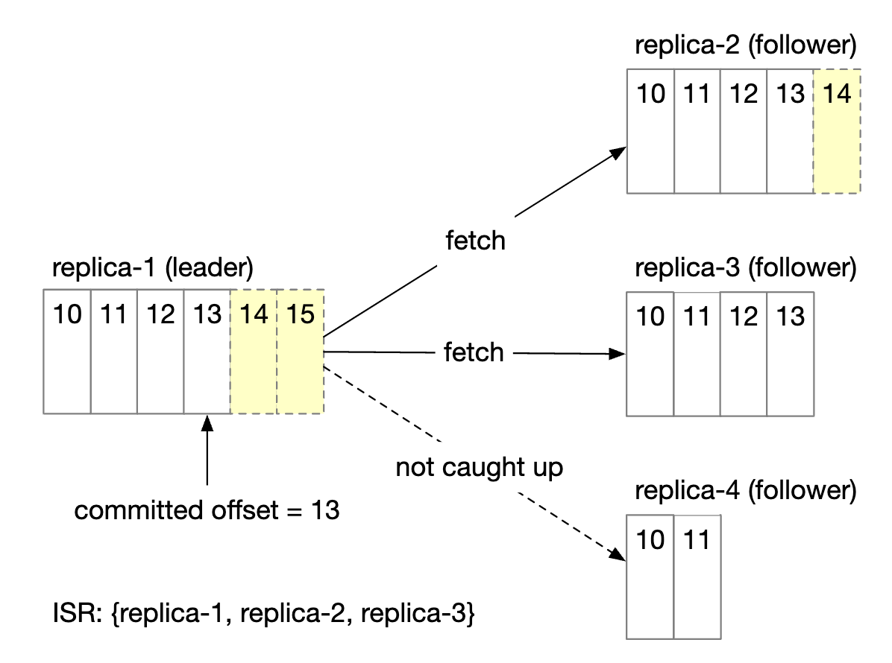
Book replica.lag.max.messages bolti hai; modern Kafka mein yeh hata ke replica.lag.time.max.ms (time-based lag) use hota hai — kyunki message-count based threshold traffic spike pe healthy replicas ko bhi ISR se nikaal deta tha.
ACK settings
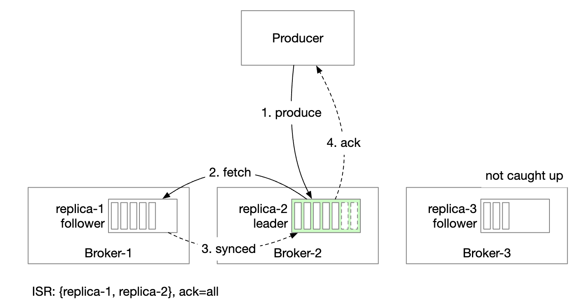
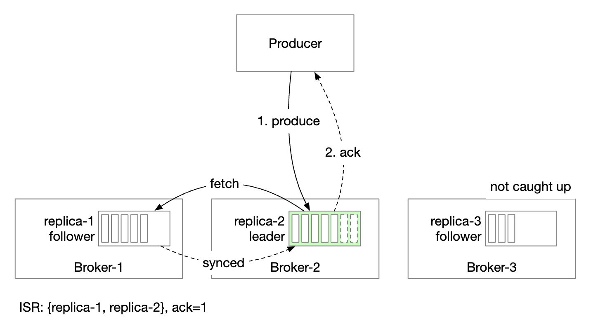
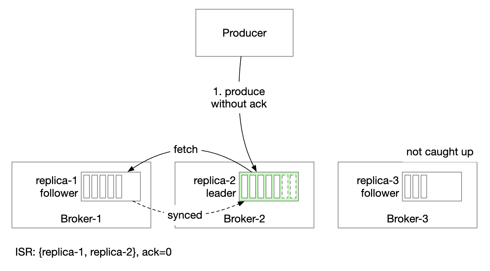
| acks | Latency | Durability | Use case |
|---|---|---|---|
| 0 | Lowest | Lowest (loss possible) | Metrics, clickstream sampling |
| 1 | Low | Medium (leader crash pe loss) | Logs, non-critical events |
| all | Highest | Highest | Payments, ledger events, orders |
replication.factor=3, min.insync.replicas=2, producer acks=all, enable.idempotence=true, unclean.leader.election.enable=false. Meaning: ek broker gir jaaye to bhi writes chalti rahengi (2 ISR baaki); do gir jaayein to producer ko NotEnoughReplicasException milega — unavailable but not lossy. Money systems mein hamesha consistency > availability choose karo. acks=all akela kaafi nahi: agar ISR shrink hoke sirf leader bacha aur min.insync.replicas=1 hai to "all" = "1" ho jaata hai.Consumers default mein leader se padhte hain (simple, aur ek group mein partition ka ek hi reader hai). Cross-DC consumers ke liye nearest ISR follower se padhna allowed ho sakta hai (Kafka: follower fetching, KIP-392, client.rack).
Step 3g: Scalability — producer, consumer, broker, partition
Producer: stateless-ish, instances add/remove karo. Consumer: groups isolated hain; group ke andar rebalancing scale aur fault tolerance deta hai.
Broker failure
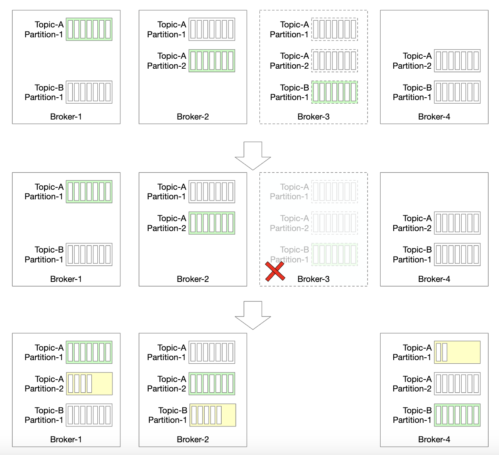
- Replicas hamesha alag brokers pe (ek hi node pe saare replicas = waste). Better: alag racks/AZs.
- Saare replicas mar gaye to data gaya — cross-DC replication latency bahut badhata hai, isliye workaround data mirroring (Kafka MirrorMaker wiki) — yeh Apache Kafka wiki page batata hai ki MirrorMaker ek cluster ke topics consume karke doosre cluster mein produce karta hai (async cross-DC copy). Full explanation: links guide.
Naya broker add karna
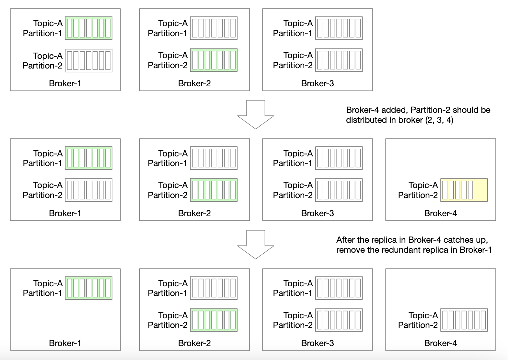
Partitions add/remove
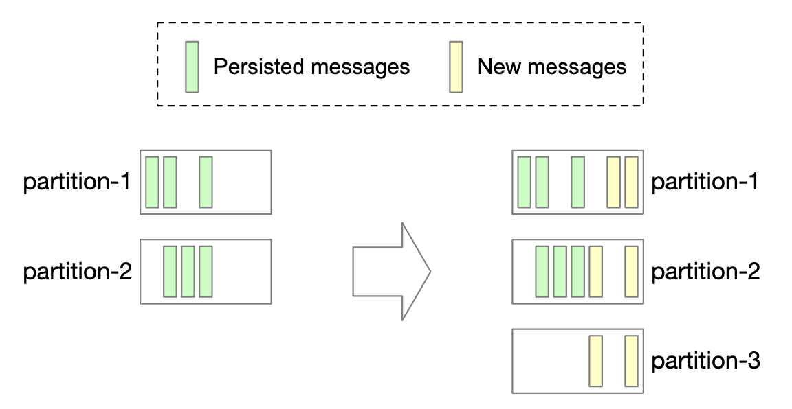
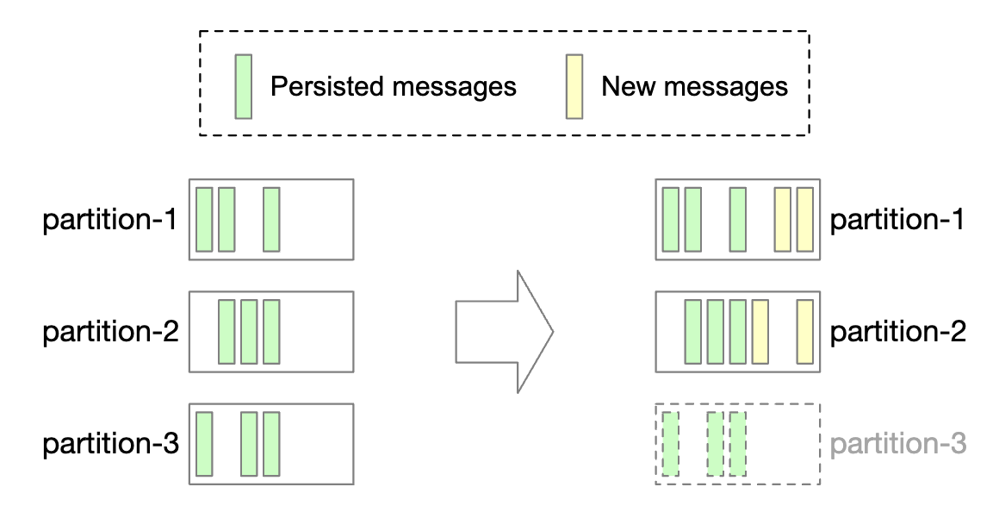
Step 3h: Delivery semantics (sabse important interview topic)
At-most-once
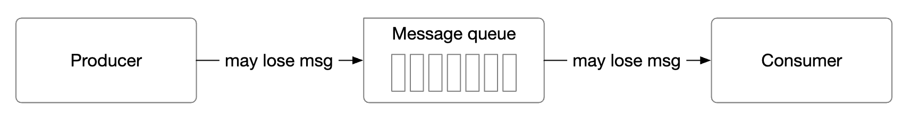
Use: metrics, monitoring jahan thoda loss chalega.
At-least-once
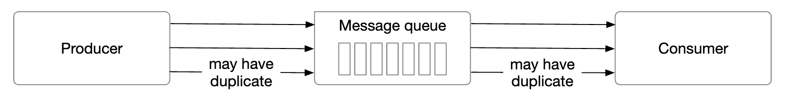
Kafka ka practical default. Duplicates consumer side dedup se handle karo.
Exactly-once
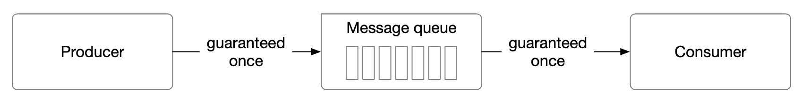
- Idempotent producer (
enable.idempotence=true, Kafka 3.0+ default): broker har producer ko ek PID deta hai, aur har partition pe har batch ka sequence number check karta hai. Retry se aaya duplicate batch broker silently drop kar deta hai. Yeh sirf ek producer session + ek partition tak duplicate rokta hai. - Transactions (
transactional.id): multiple partitions pe atomic writes + consumer offsets ko same transaction mein commit (sendOffsetsToTransaction). Consumersisolation.level=read_committedrakhein to aborted data nahi dikhega. Yeh consume → transform → produce (Kafka-to-Kafka) loop ko exactly-once banata hai — Kafka Streamsprocessing.guarantee=exactly_once_v2yahi use karta hai. - Limit: Jaise hi side-effect Kafka ke bahar hai (DB write, bank API call, SWIFT message, email), Kafka EOS kaam nahi aata. Wahan "effectively-once" = at-least-once delivery + idempotent consumer.
// Spring Boot idempotent consumer pattern (payments)
@KafkaListener(topics = "payment-events", groupId = "ledger")
@Transactional // DB transaction
public void onEvent(PaymentEvent e, Acknowledgment ack) {
// UNIQUE constraint on processed_events.event_id
if (processedRepo.insertIfAbsent(e.eventId())) { // same DB txn
ledger.post(e); // business effect
}
ack.acknowledge(); // offset commit AFTER DB commit -> at-least-once
}
// crash after DB commit but before ack -> redelivery -> insertIfAbsent=false -> skipoutbox table mein event likho, phir Debezium (CDC) ya poller usse Kafka pe publish kare. At-least-once publish + idempotent consumers = end-to-end safe.Step 3i: Advanced features
Message filtering
Har subset ke liye alag topic banana = storage waste + producer consumers se coupled. Consumer-side filter = unnecessary traffic. Better: messages pe tags lagao (metadata mein, payload decrypt kiye bina), consumer tags subscribe kare, broker filter kare. Payload-based ya scripted filters broker pe heavy aur encrypted payloads ke saath unsafe hain.
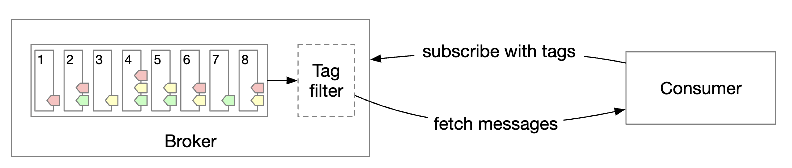
Delayed / scheduled messages
Example notes se: payment submit hua, 30 min baad check karo ki successful hua ya nahi. Delayed messages broker ke temporary storage (special internal topics) mein jaate hain aur time aane pe real partition mein move hote hain.
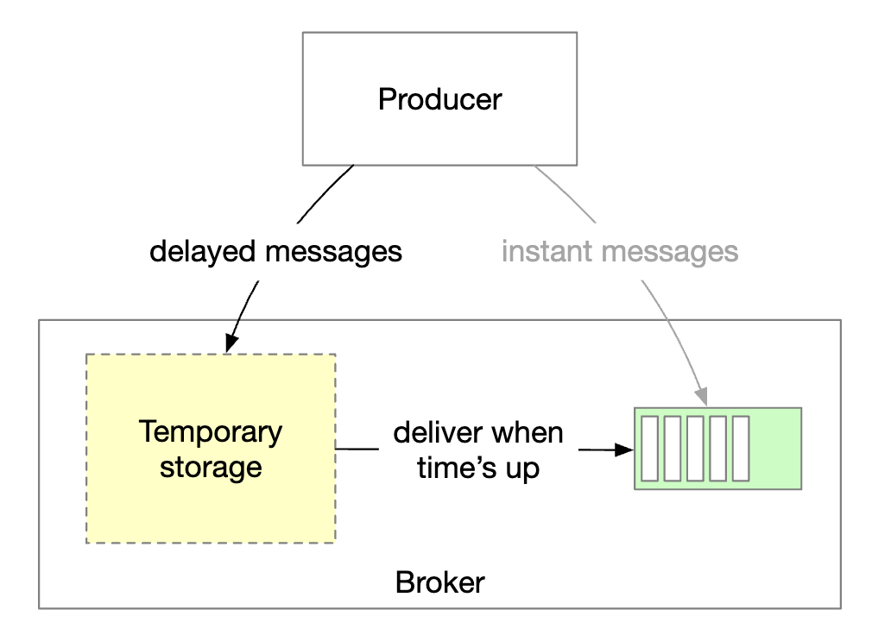
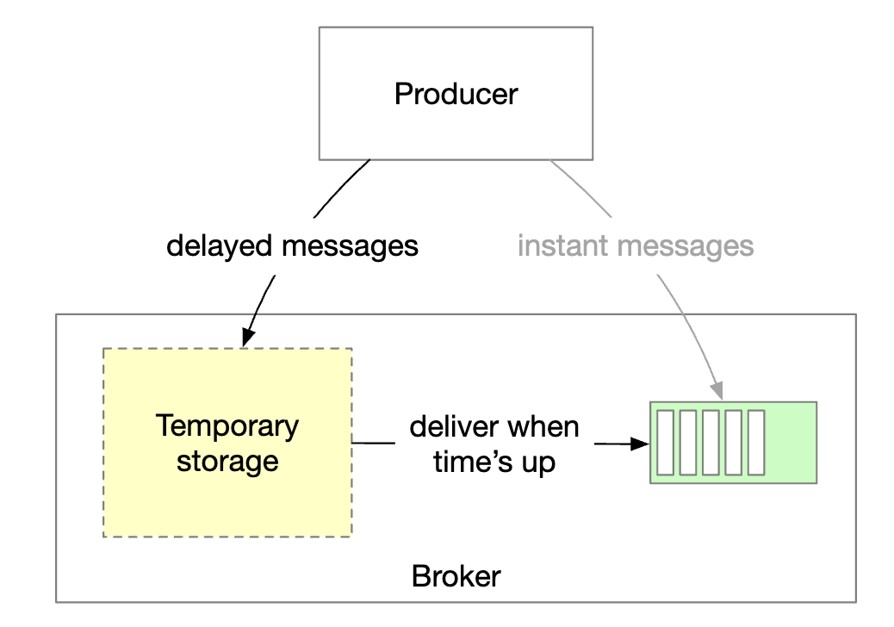
Timer kaise? Dedicated delay queues (fixed levels, jaise RocketMQ ke delay levels) ya Hierarchical Timing Wheels paper (Varghese & Lauck, SOSP '87) — yeh paper dikhata hai ki lakhon timers ko O(1) insert/expire kaise karein: ghadi jaisi circular buckets, aur bade timeouts ke liye "hours/minutes/seconds" jaise multiple wheels. Kafka khud apne delayed produce/fetch requests ("purgatory") ke liye timing wheel use karta hai. Detail: links guide.
@RetryableTopic retry topics banata hai (orders-retry-0, -retry-1, … -dlt) jahan consumer message ke timestamp + backoff tak partition pause karta hai. Yeh "non-blocking retry" hai — main topic block nahi hota, lekin us key ki ordering toot jaati hai. Payments mein ordering zaroori ho to blocking retry (DefaultErrorHandler + backoff) better.Step 4: Wrap up
- Protocol: saare use cases + high volume + integrity verify — AMQP, Kafka protocol popular.
- Retry consumption: turant process nahi hua to dedicated retry topic → baad mein retry → DLQ.
- Historical archive: purane messages HDFS/S3 mein (Kafka tiered storage, KIP-405, yahi karta hai — old segments object storage mein).
- 0-5 min: Requirements — retention? ordering? repeated consumption? semantics? Bolo "Yeh sab haan hai to main Kafka-style log design karunga, RabbitMQ-style delete-on-ack nahi."
- 5-15 min: Topic → partition → broker, consumer groups, high-level diagram (producer, brokers, metadata/coordination).
- 15-30 min: Deep dive — WAL + segments + page cache, producer batching/routing, pull model, rebalancing, ISR + acks.
- 30-40 min: Delivery semantics table + exactly-once ka honest answer (idempotent producer + transactions + idempotent consumer).
- 40-45 min: Scaling partitions (ordering caveat), delayed messages, tiered storage, KRaft.
Follow-up questions (short answers)
- Q: Global ordering chahiye poore topic pe to?
- 1 partition — throughput ek broker tak limited. Usually business ko sirf per-entity ordering chahiye (per account) — wahi partition key se do.
- Q: Consumer lag badh raha hai, kya karoge?
- Lag metric monitor (Burrow / consumer lag exporter). Pehle processing slow kyun hai dekho (downstream). Partitions ≥ consumers ho to consumers add karo; partitions kam hain to badhao (ordering caveat) ya consumer ke andar per-key parallelism (Confluent parallel-consumer).
- Q: Poison message ek partition block kar raha hai?
- N retries ke baad DLT/DLQ mein bhejo, alert lagao, offset aage badhao. Payments mein DLQ ko ops dashboard + replay tool chahiye.
- Q: Message 10 MB ka ho to?
- Claim-check pattern: payload S3 mein, Kafka mein sirf reference. Broker large messages ke liye tuned nahi hai.
- Q: Leader aur follower ka data diverge ho gaya (unclean failover)?
- Naya leader ke log ko truth maana jaata hai; followers apna log leader epoch ke basis pe truncate karte hain. Unclean election allow ho to committed data lose ho sakta hai — isliye money topics pe disable.
- Q: Kafka vs RabbitMQ kab?
- Replay, high throughput, event sourcing, stream processing → Kafka. Complex routing, per-message ack/TTL, priority, low-volume task queues → RabbitMQ.
Key Takeaways
- Retention + ordering + replay ki requirement design ko append-only partitioned log bana deti hai.
- Throughput ke teen pillar: sequential disk I/O + page cache, immutable zero-copy format, batching everywhere.
- Ordering sirf partition ke andar; partition key = ordering scope. Partition count badhana key mapping todta hai.
- Consumer group: group ke andar ek partition = ek consumer; groups ke beech pub-sub. Offsets per group.
- Pull model backpressure aur batching ke liye better; long polling se latency fix.
- ISR + acks + min.insync.replicas = durability vs latency knob. Money = acks=all, RF=3, minISR=2.
- Exactly-once Kafka ke andar possible (idempotent producer + transactions); external side-effects ke liye at-least-once + idempotent consumer + outbox.
- ZooKeeper ka role aaj KRaft ne le liya hai — interview mein yeh update bolna plus point hai.